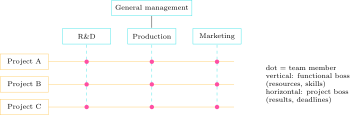

Model
| Structure | Grouping criterion | Decentralization | Typical case |
|---|---|---|---|
| Simple | the owner | none | small firm |
| Functional | input: function | limited, selective | Apple |
| Multidivisional | output: product, region, | strong, parallel | GE |
| (divisional) | customer, channel | to divisions | |
| Matrix | input and output | power shared | Nike |
1. Simple structure
Small firms; directive and operating functions concentrated in the entrepreneur; low task specialization and interchangeable roles; fast decisions and operational flexibility. Chart: Imprenditore over three boxes of organi esecutivi.
2. Functional (plurifunzionale) structure
Work divided horizontally by functional area (production, marketing, administration, finance, personnel) — specialization by input; well developed hierarchy; selective decentralization: strategic decisions, coordination and control stay with top management, managerial and operating decisions go to intermediate line managers. Example: Apple's chart — under the CEO each senior vice-president leads a function (hardware engineering, software engineering, marketing, operations, retail), not a product line: the iPhone is made by all functions together.
| Advantages | Disadvantages |
|---|---|
| efficiency of the whole system | over-specialization hurts effectiveness |
| economies of scale | behaviour aimed at partial objectives |
| specialist skills, steady quality | line/line, line/staff conflicts |
| operational flexibility | managers' general skills and motivation |
| fast decisions and information flow | develop little |
3. Multidivisional structure
Activities grouped by main business segment (product lines, regions, customer categories, distribution channels) into divisions; each division is internally organized by function; strong, parallel decentralization towards divisions. Three decision levels: corporate strategy (general management) → competitive strategy per output (division heads, delegated) → managerial and operating decisions (functions, delegated). Example: General Electric — a corporate office with shared staff (legal, research, business development) over business divisions such as aviation, healthcare and energy, later separated into GE Aerospace, GE HealthCare and GE Vernova. A textbook chart: pharmaceutical division, chemical division, cosmetics division, each with its own R&D, production, sales, administration and personnel.
| Advantages | Disadvantages |
|---|---|
| favours effectiveness | penalizes global efficiency: duplicated |
| manages technically, geographically and | specialist services and units → more |
| commercially diversified activities | resources, more capital → higher costs |
| top management focuses on strategy, | conflicts among divisions for resources, |
| control of common processes | and between centre and divisions |
| develops managers, motivation | needs more coordination and control |
4. Matrix structure
Typical of firms producing by project or to order. Cross-functional work: teams of specialists from functions dedicated to a project/product/market. Each team reports to the project/product manager, to the functional manager and to the team leader. Two command lines: one on resources and functions (functional directors), one on results (project directors). Example: Nike — geographic divisions (North America, EMEA, Greater China, Asia Pacific and Latin America) cross product categories (footwear, apparel, equipment) and global functions (innovation and design, supply chain, marketing, HR); brands Converse and Jordan sit alongside. Advantages: efficiency and effectiveness, coordination of different activities towards specific outputs, flexibility, diffusion of power. Disadvantages: sense of precariousness and insecurity in staff; dual command can delay decisions.
Combining criteria in practice
Real firms mix criteria on different levels: e.g. general management → functions (production, sales, administration, personnel, research) → the sales function split by area (North, Centre, South and islands) → each area split by product (product 1, product 2), each with its own sales network.
Worked example
A firm sells two very different product lines in three countries. Functional: one factory, one sales team — cheapest, but each line competes for attention. Divisional: two divisions with their own R&D and sales — each line responds to its market, at the cost of duplicated staff. Matrix: shared engineers assigned to line projects — scarce skills are reused, but every engineer has two bosses. Choose by the interdependence that most needs tight coordination (contingency).
Pitfall
"Multidivisional" is not "many functions": divisions are defined by output. Effectiveness vs efficiency is the key trade-off: functional optimizes efficiency, divisional favours effectiveness, matrix tries both and pays in conflicts. A chart shows formal reporting only, not processes or informal power.
Recall
For each model give grouping criterion, degree of decentralization, two pros, two cons and the real company used as example. Draw the matrix.
Picture

In a matrix every team member sits at the crossing of two command lines.